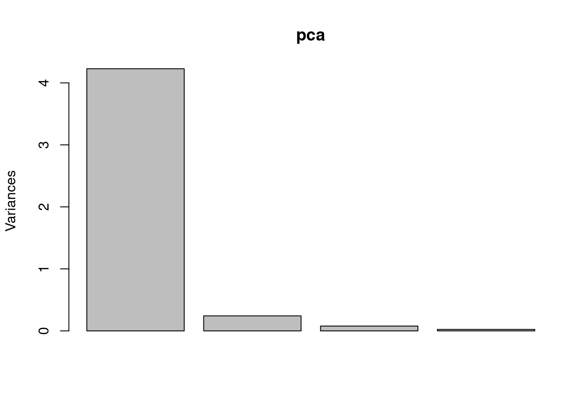
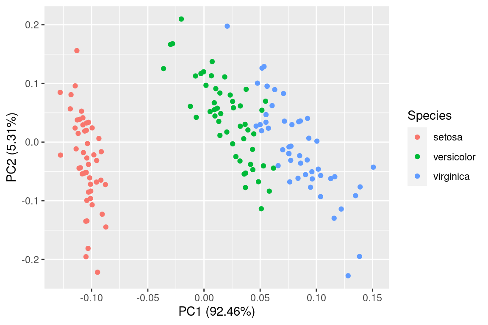

12.32 主成分图
借助 autoplotly 包 [21] 可将函数 stats::prcomp 生成的结果转化为交互图形
pca <- prcomp(iris[c(1, 2, 3, 4)])
plot(pca)
library(autoplotly)
autoplotly(pca,
data = iris, colour = "Species",
label = TRUE, label.size = 3, frame = TRUE
)ggfortify [22] 包将主成分分析图转化为静态图形
library(ggfortify)
autoplot(pca, data = iris, colour = 'Species')

图 12.70: 主成分分析
参考文献
[21]
Y. Tang, “Autoplotly: An r package for automatic generation of interactive visualizations for statistical results,” Journal of Open Source Software, vol. 3, 2018,Available: https://doi.org/10.21105/joss.00657
[22]
Y. Tang, M. Horikoshi, and W. Li, “ggfortify: Unified interface to visualize statistical results of popular r packages,” The R Journal, vol. 8, no. 2, pp. 474–485, 2016, doi: 10.32614/RJ-2016-060.